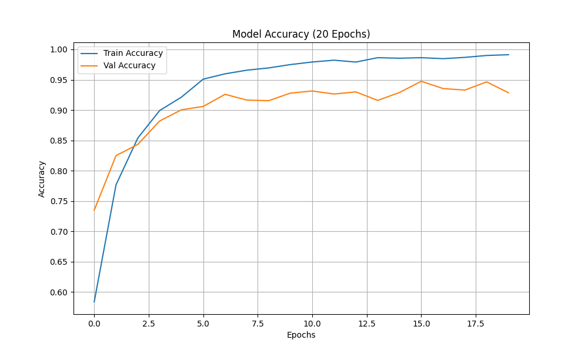
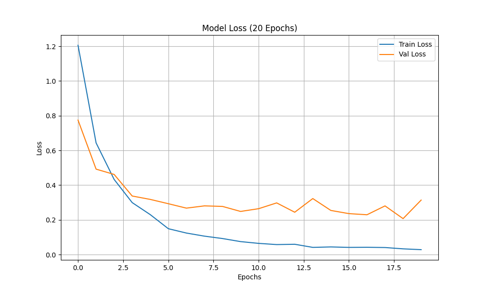

Technical Information
Deep dive into the architecture, features, and performance metrics.
← Back to AnalyzerEfficientNet Architecture
The system leverages EfficientNetB0, a state-of-the-art CNN architecture that optimizes both accuracy and efficiency using compound scaling.
- Compound Scaling: Balances depth, width, and resolution.
- MobileInverted Bottleneck: High performance with low latency.
- Transfer Learning: Fine-tuned specifically for audio patterns.
Understanding Mel-Spectrograms
What is a Mel-Spectrogram?
A Mel-Spectrogram is a "picture of sound" - it's a visual representation that shows which frequencies (pitches) are present in audio and how they change over time.
How to Read It:
- X-axis (Horizontal): Time progression - left to right shows how the sound evolves
- Y-axis (Vertical): Frequency - bottom shows low pitches (bass), top shows high pitches (treble)
- Colors: Intensity/loudness - brighter colors = louder sound at that frequency
Why "Mel" Scale?
The Mel scale is designed to match human hearing. We're better at distinguishing between low pitches (100Hz vs 200Hz) than high pitches (8000Hz vs 8100Hz sound almost identical). The Mel scale compresses high frequencies to match how we actually perceive music.
Perfect for Genre Classification:
- Captures Timbre: Different instruments create unique frequency signatures
- Shows Rhythm: Beats appear as repeating vertical patterns
- Preserves Harmony: Chords and melodies create distinct horizontal structures
- Genre-Specific Patterns: Rock shows guitar harmonics, Hip-Hop shows strong bass, Classical shows wide frequency range
Example: In your Grad-CAM results, red/yellow regions on the Mel-Spectrogram show exactly which frequencies and time segments the AI focused on to identify the genre!
Model Performance & Training Insights
Empirical evidence of the model's reliability and accuracy across 10 distinct genres.
Accuracy Over Epochs
Demonstrates the learning curve and final validation precision.
Loss Reduction
Visualizing the minimization of error during training.
Confusion Matrix

Detailed breakdown of categorization performance per genre.